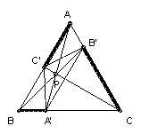

P is a point inside the equilateral triangle ABC. The lines AP, BP, CP meet the opposite sides at A', B', C' respectively. Show that A'B'.B'C'.C'A' ≥ A'B.B'C.C'A.
Solution

Using the cosine formula on the triangle AB'C' we have (B'C')2 = (AB')2 + (C'A)2 - AB'.C'A >= AB'.C'A (with equality iff AB' = C'A). Similarly for theother sides. So (A'B'.B'C'.C'A')2 ≥ (A'B.B'C.C'A)(AB'.BC'.CA'). But Ceva's theorem gives (A'B.B'C.C'A) = (AB'.BC'.CA').

© John Scholes
jscholes@kalva.demon.co.uk
16 Dec 2002